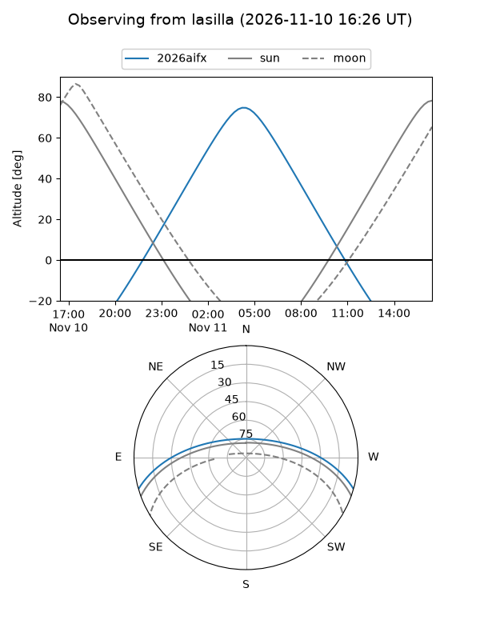
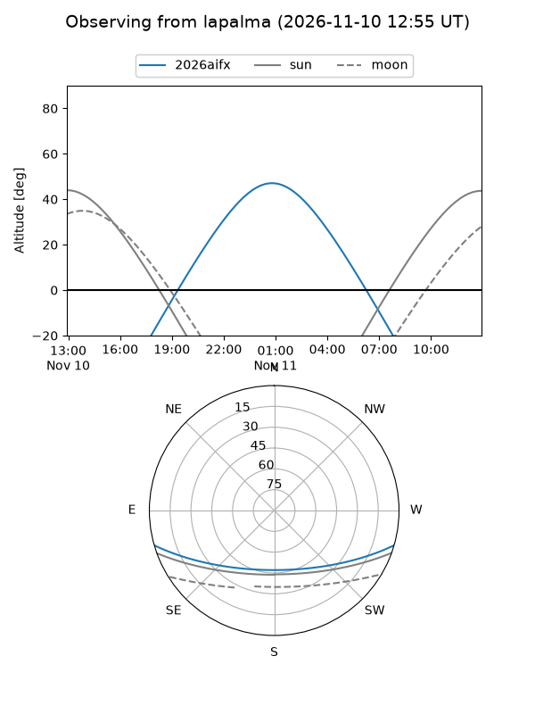
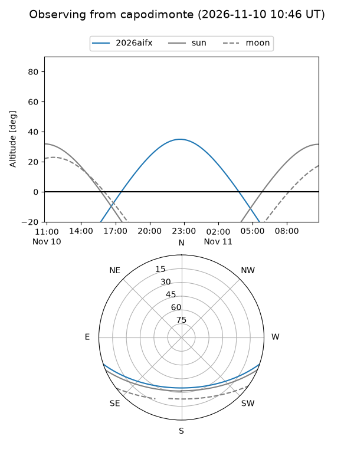
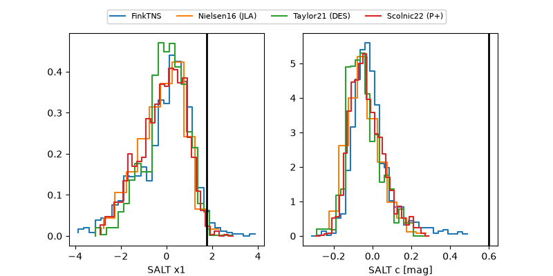

2026aifx
Target 2026aifx at 2026-11-10 16:01
Aliases and brokers:
FINK-ZTF: ztf.fink-portal.org/ZTF26acfaxng
Lasair-ZTF: lasair-ztf.lsst.ac.uk/objects/ZTF26acfaxng
ALeRCE-ZTF: alerce.online/object/ZTF26acfaxng
YSE-PZ: ziggy.ucolick.org/yse/transient_detail/2026aifx
TNS name: wis-tns.org/object/2026aifx
Direct TNS query: direct search
alt names
ZTF26acfaxng (ztf,fink_ztf)
2026aifx (tns,yse)
Coordinates:
equatorial (ra, dec) = 43.9239,-14.25161
equatorial (HMS+DMS) = 02:55:41.74,-14:15:05.78
galactic (l, b) = (195.2462,-58.33640)
Flags:
peak dt: -5.6
Photometry:
last atlasc=18.69, ztfg=18.96, ztfr=18.42
1 atlasc, 4 ztfg, 4 ztfr detections
Lightcurve
Visibility



Additional plots
